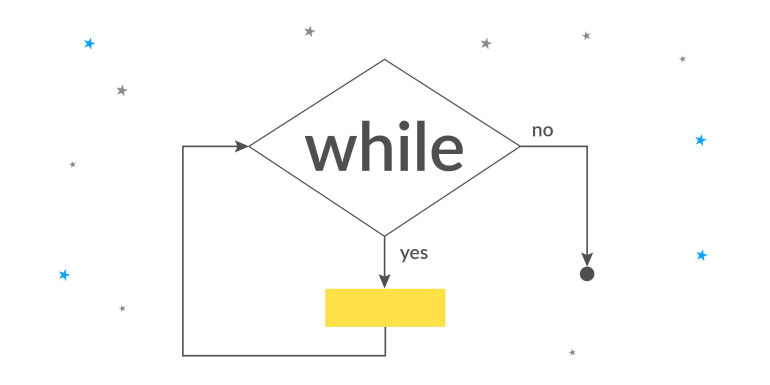
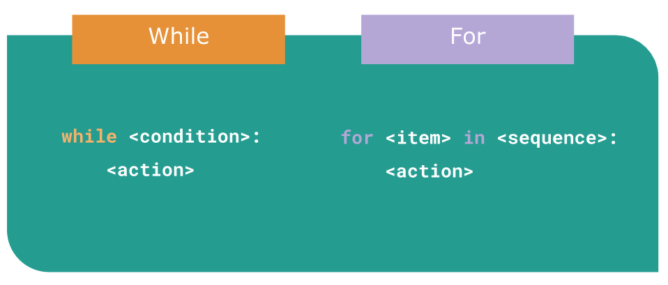

Добро пожаловать! Это - уже 11 урок нашего курса!
Что бы нам с Вами, закрепить прошлый материал - давайте пройдем небольшой квиз!
Итак, начнем!
Сейчас нам уже известны некоторые управляющие конструкции. Эти конструкции помогают программисту правильно направлять программу для выполнения определенных действий.
Там, где нужно что-то вывести на экран, программист использует функцию print().
Там, где нужно попросить пользователя ввести какие-то данные, используется функция input().
Там, где не хватает команд для решения специфической задачи, мы можем позаимствовать их с помощью команды import.
Там, где нужно повторять много раз одни и те же действия в одном месте программы, мы используем цикл for.
Там, где нужно использовать один и тот же кусочек кода в разных местах программы, мы используем функцию def.
Там, где нужно направить программу по определенному пути, мы используем конструкцию if-elif-else.

Сегодня нам нужно поговорить о цикле. У нас уже есть знакомство с циклом for, который перебирает элементы в определенной последовательности до ее окончания. Внутри цикла выполняются инструкции, которые повторяются каждый раз. То есть цикл for знает, сколько раз ему нужно повториться.
Если нам нужно повторить определенное число раз инструкции в программе, то мы можем использовать цикл for. Допустим, нам нужно повторить инструкции 10 раз:
1. Взять тарелку.
2. Вымыть тарелку.
3. Убрать тарелку.
Если у нас есть 10 тарелок в раковине, то цикл for с 10 повторами будет идеальным. Но что, если мы не знаем, сколько тарелок у нас есть и нужно просто вымыть все?
Инструкции остаются теми же:
1. Взять тарелку.
2. Вымыть тарелку.
3. Убрать тарелку.
Но сколько раз их повторять - неизвестно.
Можно использовать цикл for с большим числом повторений, например, for i in range(1000):
Однако, если у нас всего 30 тарелок, повторять инструкции еще 970 раз будет избыточно. Мы можем уменьшить число до 50, например, for i in range(50):
Но если у нас окажется 51 тарелка, то одна из них останется не вымытой. В задачах мы не всегда знаем точное число повторений цикла. Всегда есть неопределенность в количестве повторений.
Например, когда Вы пытаетесь заснуть и начинаете считать овец, Вы не знаете, на какой овечке уснете.
Значит, в идеале нам нужна конструкция, которая может повторять определенные инструкции не заданное количество раз, а до определенного момента. В этом и заключается суть. У цикла for есть аналог - цикл while, который работает похожим образом, но с некоторыми отличиями.
Цикл while также повторяет инструкции, однако он делает это без знания точного количества повторений. Цикл while предоставляет программисту возможность самому определить момент, когда нужно остановиться. Вот в чем принципиальное различие между циклом while и циклом for. Цикл for всегда знает, сколько раз нужно повторить определенный набор действий, позволяя программисту указать точное количество повторений. А цикл while начинает повторять набор инструкций без понимания, когда он закончит, предоставляя программисту возможность определить момент, когда нужно остановиться.
Например, если мы хотим написать набор инструкций для мытья посуды и нам известно точное количество тарелок в раковине, мы можем использовать цикл for:
for i in range(10):
берем тарелку
моем тарелку
убираем тарелку
Однако, если мы не знаем точное количество тарелок, мы можем использовать цикл while:
while (пока тарелки не закончились):
берем тарелку
моем тарелку
убираем тарелку
Таким образом, цикл while позволяет нам повторять набор инструкций до определенного момента, когда условие становится ложным.

Как правильно попросить компьютер на языке Python повторять инструкции до определенного момента?
Для этого мы используем ключевое слово "while", которое переводится как "пока" или "пока-что". Затем мы должны указать условие, при котором цикл будет завершаться. Это условие задается с помощью вопроса, аналогичного конструкции "if". Например, в случае с тарелками:
while plate > 0: # пока количество тарелок больше нуля
берем тарелку
моем тарелку
убираем тарелку
Допустим, у нас в раковине 5 тарелок. Мы просим компьютер создать цикл и повторять инструкции до тех пор, пока количество тарелок не уменьшится до 0.
Предположим, что количество тарелок хранится в переменной "plate".
Компьютер проверяет значение переменной "plate" и видит там число 5. Затем компьютер отвечает на вопрос "plate > 0" - то есть "5 > 0"? Ответ - да, пять больше нуля. Если ответ "да", компьютер выполняет одну итерацию цикла и возвращается к вопросу. Теперь в переменной "plate" лежит 4 тарелки, и компьютер снова отвечает на вопрос "4 > 0". Ответ по-прежнему "да". И набор инструкций повторяется. На следующем шаге компьютер отвечает на вопрос "3 > 0" и снова повторяет набор инструкций, так как ответом снова будет "да". Затем будет вопрос "2 > 0", и снова будет повтор, и, наконец, "1 > 0" - и снова повтор, потому что ответом все равно остается "да".
Однако, когда тарелок станет 0, вопрос превратится в "0 > 0" - и тут уже ответом будет "нет". Как только мы ответим "нет" на вопрос, цикл завершится.

Можем подвести промежуточный итог! Цикл while - это инструкция в программировании, которая позволяет выполнять определенный набор действий (код) несколько раз, пока выполняется условие. Вот пример: представьте, что Вы играете в игру "Угадай число" с другом. Вы загадываете число, а друг пытается его угадать. Он начинает делать предположения, и Вы говорите ему, больше или меньше его число от загаданного. Он продолжает делать предположения, пока не угадает число. В этом случае, играющий друг использует цикл while.
Пример из жизни --> представьте, что Вы сидите на качелях в парке. Вы будете продолжать качаться, пока Вас не остановят или пока не устанете. Цикл while работает похожим образом - он продолжает выполняться до тех пор, пока условие истинно.
Цикл for, с другой стороны, используется, когда Вы знаете точное количество повторений, которое Вам нужно сделать. Например, если Вы хотите написать программу, которая выводит числа от 1 до 10, Вы можете использовать цикл for. Этот цикл имеет начальное значение, условие и шаг, который определяет, как изменяется значение на каждой итерации.
Пример из жизни --> представьте, что у Вас есть коробка с конфетами, и Вы хотите поделить их между друзьями. У Вас есть 10 друзей, и Вы знаете, что каждый из них получит по одной конфете. Вы можете использовать цикл for, чтобы поделить конфеты между друзьями, так как Вы знаете точное количество повторений (10 друзей).
Таким образом, цикл while используется, когда Вы не знаете точное количество повторений и хотите продолжать выполнять код, пока условие истинно. Цикл for, с другой стороны, используется, когда Вы знаете точное количество повторений и хотите выполнить код определенное количество раз.
Небольшой тест для самопроверки
Примечание: Если вместо условия в цикле `while` подставлять значение `True`, то цикл становится бесконечным. Это означает, что цикл будет выполняться бесконечно, пока не будет прерван внешним фактором, таким как принудительное завершение программы или условие `break` внутри цикла. Будьте осторожны при использовании бесконечных циклов, чтобы избежать зацикливания программы.